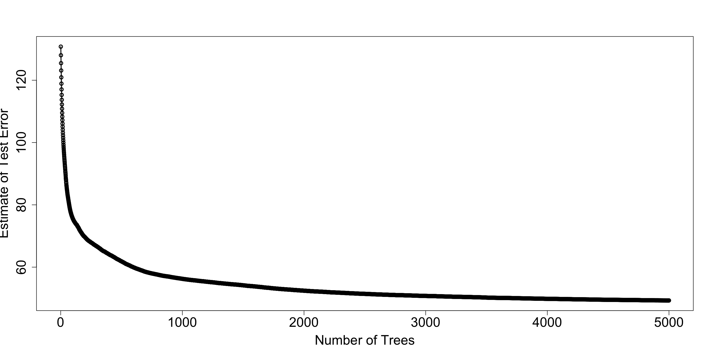

Chapter 15 Tree Ensemble Methods for Prediction
15.1 Motivation
A major issue with single-decision tree models is that they can have high variance.
- At least among decision trees that are allowed to be flexible enough to have modest bias.
Small perturbations in the data can often have substantial impacts on the final estimated tree.
This can occur, for example, because a small perturbation can impact the first variable chosen to split on.
- This early split further influences splitting variables and splitting points chosen further down the tree.
For single-decision trees, you can have substantial changes in the fitted values when moving from one region to another.
You can often have small number of observations in some terminal nodes.
Using ensembles of trees has been found
Two well-known tree ensemble methods:
- Random Forests
- Gradient Boosting with Trees
15.2 Gradient Boosting with Regression Trees
Boosting is an ensemble method that takes a sequential appraoch to building an ensemble of trees.
Uses a somewhat similar idea to forward selection in linear regression.
Each tree is typically a “shallow tree” (weak learner).
- Each tree, by itself, often does not have strong performance.
- Each tree: high bias, but low variance.
- Aggregating all trees leads to stronger performance.
Idea: Start with a single tree
- Add more trees one at a time.
- Each new tree tries to improve on the previous ones.
Goal: We want to estimate a regression function \(f_{M}(\mathbf{x})\) that can be expressed as the sum of M trees: \[\begin{equation} f_{M}(\mathbf{x}) = \sum_{m=1}^{M} T(\mathbf{x}; \Theta_{m}) = \sum_{m=1}^{M} \sum_{h=1}^{H} \mu_{hm} I( \mathbf{x} \in A_{hm} ). \nonumber \end{equation}\]
To describe this procedure, let \(T(\mathbf{x}; \Theta_{m})\) denote the “fitted value” for the input covariate vector \(\mathbf{x}\) when using a tree with parameters \(\Theta_{m}\).
Parameters of the \(m^{th}\) tree: \(\Theta_{m} = \{ A_{hm}, \mu_{hm} \}_{h=1}^{H}\), where
- \(H\) disjoint ``terminal regions’’ \(A_{1m}, \ldots, A_{Hm}\)
- \(\mu_{hm}\) output assigned to region \(A_{hm}\), i.e., \(T(\mathbf{x}; \Theta_{m}) = \mu_{hm}\) whenever \(\mathbf{x} \in A_{hm}\).
15.3 Estimating the Tree in each Iteration
Strategy: estimate parameters \(\Theta_{1}, \ldots, \Theta_{M}\) in a forward, stagewise manner.
First, estimate \(\widehat{\Theta}_{1}\) by targeting the loss function \(L(\mathbf{y}, T(\mathbf{X}; \Theta_{1}))\)
For example, the squared-error loss would be \[\begin{equation} L(\mathbf{y}, T(\mathbf{X}; \Theta_{1})) = \sum_{i=1}^{n} \Big( y_{i} - T(\mathbf{x}_{i}; \Theta_{1})) \end{equation}\]
Remaining tree parameters are estimated by looking at \[\begin{equation} L_{I}\Big( \mathbf{Y}, \sum_{k=1}^{m-1} T(\mathbf{X}; \widehat{\Theta}_{k}) + T(\mathbf{X}; \Theta_{m}) \Big). \label{eq:direct_boost_loss} \end{equation}\]
\(m^{th}\) iteration of boosting: estimate \(\Theta_{m}\)
Estimation of \(\Theta_{m}\) is performed in two stages
Stage 1: Calculate terminal regions \(A_{hm}\) by fitting the (generalized) residuals \(r_{i,m-1}\) \[\begin{equation} r_{i,m-1} = -\Big[ \frac{\partial L(y_{i}, f(\mathbf{x}_{i}) }{ \partial f(\mathbf{x}_{i})} \Big]_{f = f_{m-1}} \end{equation}\]
Fit a regression tree using the residuals \(r_{1,m-1}, \ldots, r_{n,m-1}\) as outcomes.
The number of terminal regions is often fixed to a small number or chosen to have a maximum number of terminal regions (such as 6).
- Stage 2: Estimate terminal values \(\mu_{hm}\) within each region \(A_{hm}\), by minimizing: \[\begin{equation} \mu_{hm} = \arg\min_{\alpha} \sum_{x_{i} \in A_{hm}} L\Big(y_{i}, f_{m-1}(\mathbf{x_{i}}) + \alpha \Big) \end{equation}\]
15.3.1 Adding Trees and Learning Rate
Updating the boosting model by using shrinkage is common in most implementations of boosting.
Obtain \(f_{m}(\mathbf{x})\) from \(f_{m-1}(\mathbf{x})\) with \[\begin{equation} f_{m}(\mathbf{x}) = f_{m-1}(\mathbf{x}) + \eta T(\mathbf{x}, \widehat{\Theta}_{m}), \label{eq:shrink_boost_update} \end{equation}\]
The shrinkage term \(\eta \in (0, 1)\) is often referred to as the ``learning rate’’
Choosing a relatively small value of \(\gamma\) typically leads to improved out-of-sample predictive performance.
- Usually, \(\eta \leq 0.3\).
Boosting often requires tuning of the hyperparameters.
Main hyperparameters that require tuning:
- Learning rate \(\eta\).
- Number of trees \(M\).
15.3.2 Choice of Loss Function
An advantage of gradient boosting is that it can work for a general loss function (as long as the loss is differentiable with respect to \(f\)).
Because of this, gradient boosting can be applied to many types of data.
Binary outcomes: \[\begin{equation} L(\mathbf{y}, f) = \sum_{i=1}^{n}L(y_{i}, f(\mathbf{x}_{i})) = -\sum_{i=1}^{n}y_{i}\log( f(\mathbf{x}_{i})) - \sum_{i=1}^{n}(1 - y_{i})\log(1 - f(\mathbf{x}_{i})) \end{equation}\]
15.4 XGBoost
xgboostis a particular version of gradient boosting that is one of the more popular boosting procedures.
15.4.1 XGBoost Example:
To try
xgboost, let’s use theBikesharedata againUse the function
xgb.DMatrixto store in the standardxgboostformat
X <- model.matrix(bikers ~ . - casual - registered, data=Bikeshare)
dtrain <- xgb.DMatrix(data = X, label = Bikeshare$bikers)- Setup the loss function and tuning parameters
- Use these tuning parameters to evaluate cross-validation loss for up to 5000 trees
cv_results <- xgb.cv(params = params,
data = dtrain,
nrounds = 5000, # Set an artificially high ceiling
nfold = 5,
early_stopping_rounds = 50, # Stop if validation loss doesn't improve for 20 trees
print_every_n = 1000, ## Print every 1000 iterations
verbose = FALSE)
## Get best number of trees
best_ntrees <- cv_results$niter
print(best_ntrees)## [1] 5000- The
evaluation_log, gives you the cross-validation estimate of test error.
## iter train_rmse_mean train_rmse_std test_rmse_mean test_rmse_std
## <int> <num> <num> <num> <num>
## 1: 1 130.7806 0.6287268 130.7842 2.580440
## 2: 2 128.0063 0.6075504 128.0172 2.549610
## 3: 3 125.4444 0.5882456 125.4703 2.529631
## 4: 4 123.0758 0.5776252 123.1309 2.495808
## 5: 5 120.8800 0.5652082 120.9308 2.477424
## 6: 6 118.8456 0.5582878 118.9107 2.488740- Let’s plot the estimate of test error versus the number of trees
plot(cv_est$iter, cv_est$test_rmse_mean, xlab="Number of Trees",
ylab="Estimate of Test Error", lwd=2, cex.lab=1.8, cex.axis=1.8)
lines(cv_est$iter, cv_est$test_rmse_mean, lwd=2)
xgboostfinal model:
fmodel <- xgb.train(
params = params,
data = dtrain,
nrounds = best_ntrees, ## Use best number of trees found.
verbose = FALSE
)For variable importance, you can use the
xgb.importancefunction:Focus first on the
Gainmeasure
## Feature Gain Cover Frequency
## <char> <num> <num> <num>
## 1: hr 6.094613e-01 2.489973e-01 2.835293e-01
## 2: workingday 9.527221e-02 6.228275e-02 9.250601e-02
## 3: temp 9.301823e-02 1.137220e-01 9.277318e-02
## 4: atemp 6.831905e-02 9.450804e-02 7.868020e-02
## 5: day 6.092996e-02 1.699986e-01 1.536869e-01
## 6: hum 2.536401e-02 1.393883e-01 1.219610e-01
## 7: season 2.251663e-02 2.314883e-02 1.649746e-02
## 8: weathersitlight rain/snow 1.308303e-02 5.585087e-03 8.549292e-03
## 9: weekday 4.216005e-03 3.888823e-02 4.107668e-02
## 10: windspeed 2.432924e-03 5.937056e-02 5.216404e-02
## 11: holiday 1.549682e-03 1.234457e-02 1.663104e-02
## 12: mnthOct 8.159898e-04 3.940423e-03 5.343308e-03
## 13: weathersitcloudy/misty 8.154313e-04 3.968670e-03 8.282127e-03
## 14: mnthJuly 5.353409e-04 7.731059e-03 8.215335e-03
## 15: mnthAug 4.950994e-04 4.003442e-03 8.682875e-03
## 16: mnthJan 4.406507e-04 1.199042e-03 8.014961e-04
## 17: mnthMay 4.339196e-04 6.681561e-03 5.343308e-03
## 18: mnthNov 1.169683e-04 7.603482e-04 1.803366e-03
## 19: mnthSept 8.758547e-05 4.873114e-04 4.007481e-04
## 20: mnthMarch 4.037417e-05 4.448012e-04 1.001870e-03
## 21: mnthJune 3.377174e-05 3.163915e-04 4.675394e-04
## 22: mnthFeb 1.869893e-05 2.139552e-03 1.536201e-03
## 23: mnthDec 3.118807e-06 9.309442e-05 6.679134e-05
## Feature Gain Cover Frequency
## <char> <num> <num> <num>